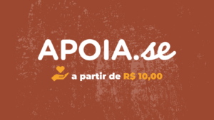

Sobre o NM em Foco
Somos o projeto NM em Foco. Nos reunimos com objetivo de discutir a não-monogamia fundamentada em um pensamento político que compreende a monogamia, não apenas como uma modelo relacional, mas como uma estrutura de dominação que orienta a forma como nos relacionamos em sociedade. A monogamia enquanto prática compulsória, sistematiza e hierarquiza as relações, além de enfraquecer a nossa capacidade de organização coletiva, transformando comunidades em núcleos produtivos. Refletindo sobre isso e percebendo a escassez de perfis nas mídias sociais online que abordavam o assunto por uma perspectiva de pessoas dissidentes, Nana Miranda, Newton Jr. e Simone Bispo se uniram para trazer junto ao debate público uma análise interseccional acerca da não-monogamia para além do senso comum. Nossas produções estão voltadas para as questões de gênero, raça, classe e sexualidade. Por isso, tomamos a não-monogamia política como um projeto coletivo e emancipatório que permite a imaginação de alternativas que se utilizam da construção de redes afetivas baseadas na ajuda mútua para reagir aos efeitos nocivos da estrutura monogâmica. Para nós a não-monogamia política é um dos orientadores dos nossos projetos de vida e o fio condutor para a formação de uma identidade política anticolonial, anticapitalista e antirracista.
Quem faz o NM em Foco
- Nana Miranda
- Newton Júnior
- Thais Carvalho
- Victor Barroso
NMPod
É com grande alegria que anunciamos o lançamento do NMPod, o podcast do NM em Foco. O episódio piloto já está disponível no Spotify! A gente chega na podosfera pra falar de VÁRIOS assuntos, mas sempre pela perspectiva da Não-monogamia Política, é claro. Nesse episódio piloto, falamos um pouco do surgimento do projeto e de como o foco dele foi se definindo. Aproveitamos a oportunidade também pra falar de nossas vivências na não-monogamia e como elas se atravessam a vivência no projeto. O NMPod a princípio vai ser um podcast mensal. Esperamos que vocês gostem do que preparamos pra vocês. Comenta com a gente o que acharam da vinheta e do episódio no geral! Vinheta, gravação e edição por Daniel Agabiti (@daniel.agabiti).
Ouça o podcast no Spotify.
Na Mídia
O projeto NM em foco apesar de ser recente em sua trajetória, vem alcançando uma notória visibilidade nas mídias sociais online. Essa visibilidade alcançada é resultante não só do trabalho com seriedade e compromisso que a equipe do NM em Foco realiza, mas também do engajamento e da credibilidade que conseguimos com os nossos seguidores e apoiadores. Participamos de entrevistas em alguns portais de notícias como o portal UOL, jornal O Tempo e em programas de rádio como o Las Colores da Frei Caneca FM. A presença de uma mídia independente como a nossa nos diversos espaços da internet é um potente mecanismo que, ao passo que visibiliza nosso trabalho, também consolida o NM em Foco como um projeto político engajado e comprometido com as emancipações dos sujeitos não-hegemônicos. Acompanhe nossas entrevistas e participações em diversos veículos regionais e nacionais.
Acesse as matérias no Site:
Apoie o Projeto
Como forma de potencializar a visibilidade do NM em Foco, criamos uma campanha no APOIA.se por acreditarmos na coletividade e solidariedade, sobretudo, das mídias independentes como a nossa. Com o APOIA.se você poderá contribuir com valores a partir de R$ 10,00 para nos ajudar com nossa produção e manutenção de conteúdo. Com esses valores vamos melhorar a qualidade de nossos produtos, além de poder atingir mais pessoas.
Clique aqui para apoiar: 